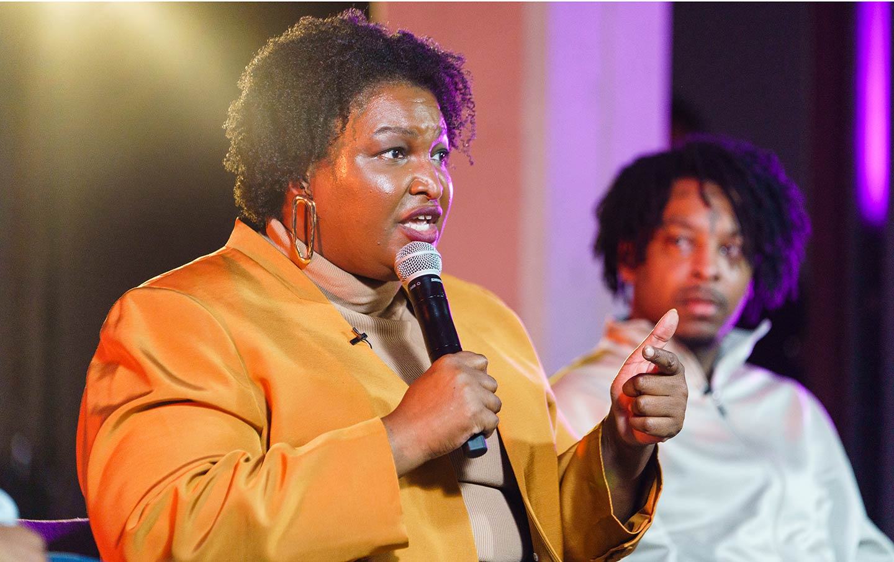
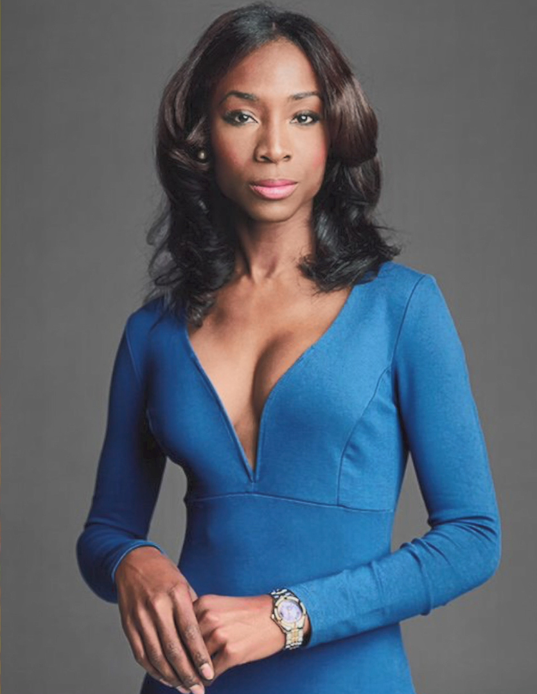
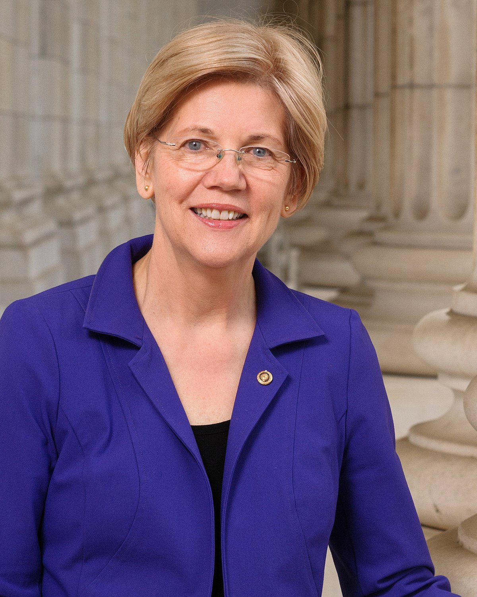

A guest speaker can perform a number of different roles.
They can energise a crowd, inspire them, support the event themes, add value by sharing insider ...
STACEY ABRAMS

Stacey Abrams is an author, serial entrepreneur,
nonprofit CEO and political leader. After serving for eleven years in the Georgia House of Representatives, seven as Minority Leader, in 2018, Abrams became the Democratic nominee for Governor of Georgia, when she won more votes than any other Democrat in the state’s history.
Abrams was the first black woman to become the gubernatorial nominee for a major party in the United States.
After witnessing the gross mismanagement of the 2018 election by the Secretary of State’s office,
Abrams launched Fair Fight to ensure every Georgian has a voice in our election system.
Over the course of her career, Abrams has founded multiple organizations devoted to voting rights,
training and hiring young people of color, and tackling social issues at both the state and national levels.
KARA SWISHER
Kara Swisher is the executive editor of Recode,
host of the Recode Decode podcast and co-executive producer of the Code Conference.
Swisher worked in The Wall Street Journal’s San Francisco bureau. For many years, she wrote the column,
“BoomTown,” which appeared on the front page of the Marketplace section and also on The Wall Street Journal Online at WSJ.
com.
Previously, Swisher covered breaking news about the Web’s major players and Internet policy issues and also wrote feature articles on technology for the paper.
She has also written a weekly column for the Personal Journal on home issues called “Home Economics.”
Previously, Swisher worked as a reporter at the Washington Post and as an editor at the City Paper of Washington, D.C.
ANGELICA ROSS

From the board room, to film/TV sets and even the Obama White House,
Angelica Ross is a leading figure of success and strength in the movement for transgender and racial equality.
Angelica made history as the first female transgender actress to secure two series regular roles,
coming off two pivotal back-to-back performances in Ryan Murphy’s groundbreaking hit drama,
“Pose”, and his horror anthology series, “American Horror Story: 1984”.
Angelica has been featured in film, television, and live theatre.
Her starring role in the Emmy Award-nominated short form series “Her Story,”
received Special Recognition at the GLAAD Media Awards and her segment on The Daily Show with Trevor Noah
was also honored with a GLAAD Award for Outstanding Talk Show Episode. Ross is also the President of Miss Ross, Inc.
and founder of TransTech Social Enterprises, a program that helps people lift themselves out of poverty through technical training,
digital work creating a social impact and bringing economic empowerment to marginalized communities.
MEGAN RAPINOE
Megan is an American professional soccer player who captains Reign FC in the National Women's Soccer League (NWSL)
and the United States women's national soccer team, playing primarily as a winger.
Winner of the Ballon d'Or Féminin and named The Best FIFA Women's Player in 2019,
Rapinoe won gold with the national team at the 2012 London Summer Olympics, 2015 FIFA Women's World Cup,
and 2019 FIFA Women's World Cup and she played for the team at the 2011 FIFA Women's World Cup where the U.S.
finished in second place. Since 2018, she co-captains the national team alongside Carli Lloyd and Alex Morgan.
She previously played for the Chicago Red Stars, Philadelphia Independence, and MagicJack in Women's Professional Soccer (WPS),
as well as Olympique Lyonnais in France's Division 1 Féminine.
ELIZABETH WARREN

Elizabeth Warren, a fearless consumer advocate who has made her life's work the fight for middle class families,
was re-elected to the United States Senate for a second term on November 6, 2018, by the people of Massachusetts.
Elizabeth is one of the nation’s leading progressive voices, fighting for big structural change that would transform our economy and rebuild the middle class.
She is widely credited for the original thinking, political courage, and relentless persistence that led to the creation of the Consumer Financial Protection Bureau,
which she helped stand up and has successfully protected millions of consumers from financial tricks and traps often hidden in mortgages, credit cards, and other financial products.